Fortinet Enterprise Networking & Security — Daily Study Quiz
Run Status — SUCCESS
2026-09-20 08:00 PT. The 30-day exclusion inventory was built before lesson generation. Twelve mechanism-level lessons were selected from authoritative Fortinet documentation and paired with Community/support scenarios. Twelve editable draw.io files and twelve standalone SVG teaching diagrams are present. The exam contains exactly 50 graded MCQs with per-choice feedback.
1. FortiGate — NAT64 + DNS64 and the NAF policy boundary
Primary: FortiOS Administration Guide — NAT64 policy and DNS64
Scenario: NAT64/DNS64 connectivity troubleshooting
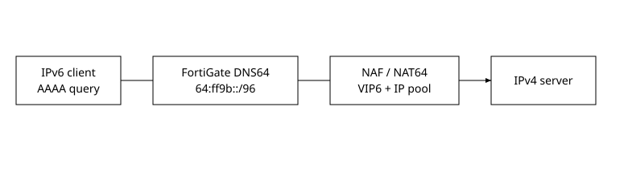
NAT64 solves a very specific transition problem: an IPv6-only client must reach an IPv4-only server. DNS64 and NAT64 are complementary but separate stages. DNS64 answers the client's AAAA lookup by synthesizing an IPv6 address from the server's A record, normally embedding the IPv4 address into the lower 32 bits of a prefix such as 64:ff9b::/96. The client therefore believes it is connecting to IPv6. When that packet reaches FortiGate, a VIP6/NAT64 mapping extracts the embedded IPv4 destination and the firewall translates the flow toward IPv4.
The operational trap is policy evaluation. With central NAT, FortiOS can evaluate the flow in two stages around the per-VDOM NAF translation interface: IPv6 ingress toward NAF, then translated IPv4 traffic from NAF toward the egress interface. Those are separate policy matches; administrators must not assume one policy's intent automatically constrains the other. Explicit source/destination matching is important to avoid a broader second-stage policy accepting traffic unexpectedly.
config system dns64 set status enable set dns64-prefix 64:ff9b::/96 end config firewall policy edit 100 set nat64 enable set ippool enable set poolname "NAT64_POOL" next end
Verification should prove each boundary independently: confirm the client receives a synthesized AAAA record; sniff the IPv6 packet toward the synthesized destination; confirm the NAT64/VIP6 match; then verify the translated IPv4 request and return traffic. Fortinet's support scenario highlights a second boundary: the NAT64 IP pool must not simply reuse the FortiGate WAN interface address. Use a suitable address from the public range and verify ARP behavior where applicable. A DNS success without translated return traffic therefore points downstream of synthesis, not at DNS64 itself.
2. FortiManager — ADOM metadata variables as late-bound configuration
Primary: ADOM-level metadata variables
Scenario: Metadata values containing spaces
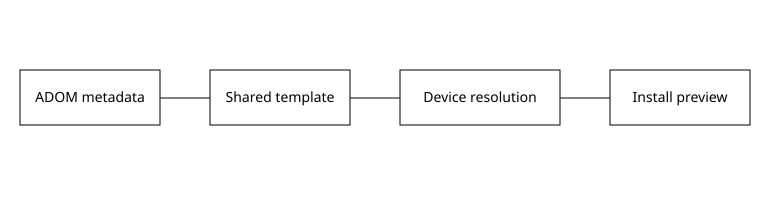
Metadata variables let FortiManager keep one shared object or template while substituting device-, group-, or ADOM-specific values at deployment time. The important mental model is late binding: the template is not the final FortiGate configuration. FortiManager resolves the variable in the context of the target device before generating install commands. Supported consumers include scripts, templates, firewall addresses, IP pools, VIPs, SSIDs, FortiSwitch VLANs, normalized interfaces, address groups, EMS connectors, and virtual-wire pairs.
This separation is powerful for fleets because topology-specific facts such as tunnel names, site subnets, VLAN IDs, or interface names can remain data rather than duplicated templates. But it also creates a failure boundary between variable storage and the destination field's parser. A value may be syntactically valid as metadata yet invalid after substitution into a particular FortiOS field.
The Community case demonstrates this with an SD-WAN interface value containing a space. The security console reports a data-source/syntax failure after substitution. Quoting the value in the metadata restores the intended tokenization. The correct troubleshooting sequence is therefore: inspect the metadata value for the target device, confirm the field actually supports metadata variables in that scope, inspect install preview, then use securityconsole debug if the resolved command still fails. Do not start by changing the FortiGate manually; that masks the source-of-truth problem and guarantees the next install will revisit it.
3. FortiAnalyzer — Log fetching is migration, not forwarding
Primary: Log Fetching
Scenario: Debugging log fetches
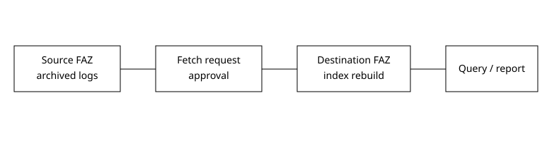
Log fetching retrieves archived logs from one FortiAnalyzer into another so the receiving appliance can index historical data and run analytics/reports against it. It is not the same workflow as continuous log forwarding. The client creates a fetch profile, sends a request to the server, synchronizes device/ADOM mappings when needed, waits for server approval, transfers the data, and then rebuilds the database/index before the fetched logs become useful for queries.
Two constraints are easy to overlook: both FortiAnalyzers must run the same firmware, and only one fetch session can exist at a time between a given pair. That means a TCP connection alone does not prove the operation is valid. The workflow also depends on correct ADOM/device identity because the destination must know where the imported historical records belong.
For troubleshooting, use the GUI status as the high-level transaction state and diagnose debug application log-fetchd 8 with debug enabled for daemon detail. Fortinet's support guidance also calls out bidirectional TCP/514 reachability when device synchronization returns a generic error. After transfer completes, wait for database rebuild; querying too early can look like missing data even though transport succeeded. The evidence chain should therefore distinguish request/approval, transport, and indexing instead of treating “fetch failed” as one undifferentiated condition.
4. FortiSwitch — BGP EVPN as the VXLAN control plane
Primary: VXLAN interfaces / BGP EVPN
Scenario: VXLAN VLAN dependency scenario
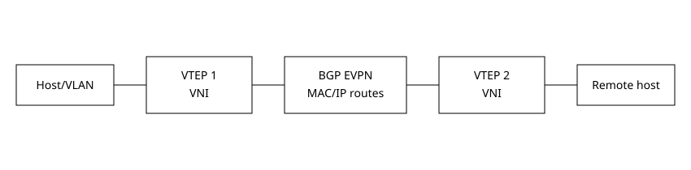
VXLAN supplies the data-plane encapsulation; EVPN supplies a BGP-based control plane for advertising MAC/IP reachability and VNI information between VTEPs. On FortiSwitchOS, BGP EVPN support requires the advanced-features license. The essential configuration chain is neighbor EVPN activation, VNI advertisement under BGP EVPN, and EVPN enablement on the VXLAN object. If any one of those boundaries is missing, a VXLAN interface can exist while remote endpoint learning remains incomplete.
FortiSwitch EVPN adds operational capabilities such as ARP/ND suppression, duplicate-address detection, and EVPN multihoming. These features move the design away from pure flood-and-learn behavior: endpoint reachability can be distributed in BGP, reducing unnecessary broadcast/unknown traffic and giving the operator a control-plane table to inspect.
Troubleshooting should start with underlay IP reachability between VTEPs, then BGP neighbor state and EVPN address-family exchange, then VNI advertisement/binding, and finally MAC/IP route installation and VXLAN forwarding. The Community VLAN/VXLAN case is a useful reminder that an apparently healthy tunnel can still fail at the local attachment boundary when VLAN dependencies prevent membership in the intended bridge/software-switch construct. Separate “overlay tunnel up” from “local VLAN attached to overlay.”
5. FortiAP/Wireless — WPA3 SAE H2E and 6-GHz eligibility
Primary: WPA3 H2E and SAE-PK
Scenario: 6-GHz SSID security restriction
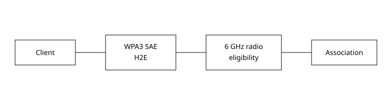
WPA3-SAE replaces the WPA2 personal pre-shared-key handshake with Simultaneous Authentication of Equals. Fortinet supports Hash-to-Element (H2E) as the password-element derivation method and SAE-PK on supported APs. H2E matters operationally because 6-GHz operation has stricter security requirements than legacy bands. A VAP that is perfectly legal on 2.4/5 GHz may be rejected for Radio 3.
Fortinet documents valid 6-GHz security choices such as WPA3 Enterprise modes, WPA3-SAE with H2E-only, or OWE under the appropriate transition constraints. The Community case shows the configuration dependency in reverse: changing a VAP from WPA3 to WPA2 can fail while that VAP is still referenced by a 6-GHz radio profile. The CLI returns an unsupported-security error rather than silently making the radio noncompliant.
The diagnostic boundary is therefore before RADIUS or DHCP. First determine whether the SSID is eligible to be instantiated on the radio. Confirm country/regulatory settings, radio band, VAP security mode, PMF/H2E requirements, and FortiAP/FortiOS compatibility. Only after the VAP is actually broadcasting and association progresses should you move into authentication-server or IP-address troubleshooting. This prevents wasting time on RADIUS when the station never reaches that stage.
6. FortiNAC — Guest self-registration and sponsor approval
Primary: Guest self-registration profile
Scenario: Self-registered guest deployment
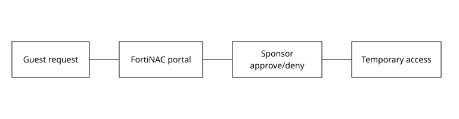
Guest self-registration is an approval workflow, not merely a captive-portal page. A visitor submits a request, FortiNAC identifies the configured sponsor, the sponsor approves or denies the request, and FortiNAC creates temporary access according to account-duration and availability constraints. Sponsor authority comes from administrative profiles; directory groups can be used to create/manage sponsor populations.
This means three state machines intersect: portal/request state, sponsor authorization state, and network-access enforcement state. A successful web form does not prove the sponsor can approve it, and an approved account does not prove the wireless/controller policy will move the endpoint from registration/isolation into its intended access state.
Useful evidence includes the self-registration request, sponsor notification and decision, resulting guest-account lifetime, host registration state, and the VLAN/role actually applied by the access policy. In FortiGate/FortiAP deployments, verify the SSID is modeled correctly and that RADIUS/NAS attributes align with FortiNAC's device model. If the guest remains isolated after approval, inspect enforcement and host state rather than recreating the sponsor account.
7. FortiNAC-F — Isolation VLANs are an active service path
Primary: FortiNAC isolation VLANs
Scenario: Simple FortiNAC deployment
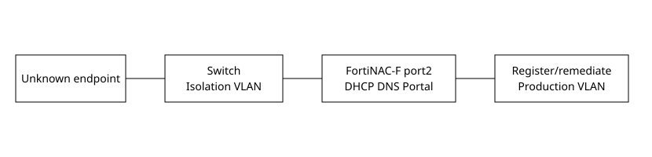
Isolation is not simply “put the endpoint in a dead VLAN.” FortiNAC-F can use different isolation states—registration, remediation, dead-end, VPN, or authentication—and the Service Network Interface on port2 supplies DHCP, DNS, and captive-portal services needed to move a host through those states. A deployment can use one shared isolation VLAN or distinct VLANs by state and location.
In Layer-3 designs, the isolation VLAN gateway commonly relays DHCP toward FortiNAC's service interface. ACLs should permit the minimum services required for onboarding/remediation. Fortinet explicitly warns against placing port1 and port2 in the same network. Identity is also important: ordinary NAT in front of FortiNAC can hide the endpoint MAC relationship required for host identification, so NAT must be designed with FortiNAC's supported captive-portal-over-NAT method when unavoidable.
When an endpoint reaches the isolation VLAN but cannot register, prove the chain in order: switch VLAN change, DHCP lease from the correct scope, DNS behavior, reachability to port2/captive portal, host/MAC identity, then registration/remediation state transition. If those services fail, changing the network-access policy will not help—the endpoint cannot reach the mechanism that would satisfy the policy.
8. FortiAuthenticator — RADIUS accounting is a session lifecycle
Primary: RADIUS sessions
Scenario: Disconnecting active RADIUS users
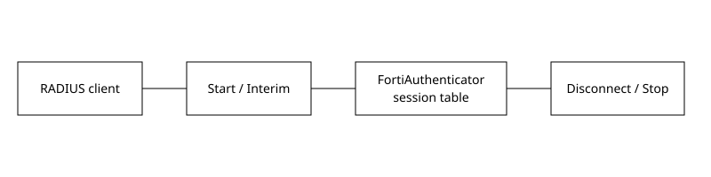
Authentication answers “may this user start?” Accounting answers “what session exists now?” FortiAuthenticator builds active session state from Accounting-Start, Interim-Update, and Accounting-Stop records. The session table can therefore show username, IP, MAC, client, duration, and usage. This state is used by multiple features: RADIUS accounting proxy, FSSO generation, and usage-profile enforcement.
The distinction matters because these features can use different accounting ports and semantics. A user can authenticate successfully while accounting is absent, leaving FortiAuthenticator unable to track usage or construct the AVPs required for a later disconnect. For a FortiGate disconnect workflow, FortiAuthenticator can send Disconnect-Request and expects Disconnect-ACK. Fortinet's guidance shows why interim accounting is valuable: attributes such as Framed-IP-Address can be learned and included with User-Name so the FortiGate can identify the exact session.
Troubleshoot with packet evidence. A healthy lifecycle is Start → Interim updates → Stop; an administrative logoff adds Disconnect-Request → Disconnect-ACK. A Disconnect-NAK with a visible session should lead you to inspect AVPs and CoA/disconnect support, not the user's password. execute tcpdumpfile -nnvi any port 1813 is useful for proving the accounting path.
9. FortiPAM — SSH filtering is inline command enforcement
Primary: Creating an SSH filter
Scenario: SSH filter and SUSE prompt behavior
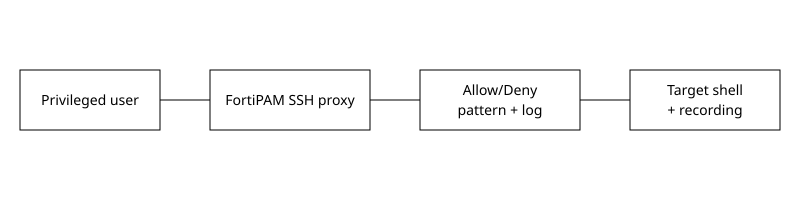
FortiPAM's SSH filter sits in the privileged session path. In Deny mode, matching command patterns are blocked; in Allow mode, only matching patterns are permitted and everything else is blocked. This is materially different from post-session audit because the proxy makes an authorization decision before the target shell receives the command.
Patterns can also be logged. With session recording enabled, newer FortiPAM releases can associate SSH event-log entries with the corresponding timestamp in video playback, allowing an auditor to jump from a command event to the visual session context. That linkage depends on an SSH filter rule with logging enabled, an SSH-enabled secret, and session recording.
The SUSE scenario demonstrates that enforcement depends on correctly understanding the interactive shell stream. An unusual prompt format can interfere with command parsing/filter behavior. When a command that should be allowed is blocked—or filtering appears inconsistent—verify the prompt and shell behavior before weakening the filter. Inspect the SSH event log, filter mode, pattern order/specificity, and recorded session. The safest design uses an allowlist for narrowly defined operational roles and tests shell/prompt variants against real target systems.
10. FortiSIEM — Remediation has a Run On and an Enforce On boundary
Primary: Remediating an incident using a script
Scenario: 502 during remediation
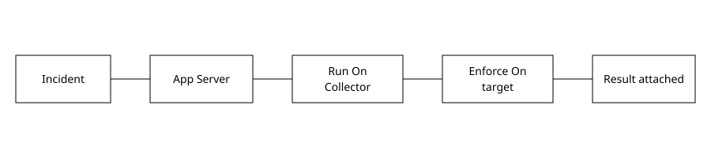
FortiSIEM remediation deliberately separates where a script executes from where its action is enforced. The Run On device is a FortiSIEM node, often a Collector, that launches the script. The Enforce On device is the firewall, server, directory, or other target being changed. The App Server passes incident XML, target identity, and credentials to the Run On node; that node must have the required protocol reachability to the target.
This model explains many “remediation failed” cases. The incident rule can be correct and the target credential can be valid while the selected Collector has no route or name-resolution path to the target. Conversely, network reachability can be perfect while CMDB identity points at a stale hostname. Fortinet's 502 scenario documents a hostname mismatch that lengthened WhoIs processing and caused a UI/App Server timeout; correcting CMDB identity and rediscovering the device restored remediation.
Evidence should include incident action status, selected Run On/Enforce On devices, CMDB hostname/IP, credential object, access protocol, Collector-to-target reachability, and script result attached to the incident. Treat remediation as a distributed transaction, not a button click.
11. FortiSASE — Direct FortiClient posture tags preserve ZTNA policy continuity
Primary: Endpoint management settings
Scenario: ZTNA compliance tags
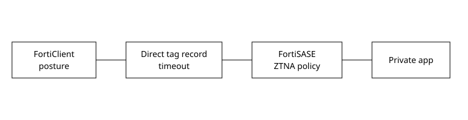
Posture tags turn endpoint facts—OS, vulnerability state, antivirus state, FortiClient version, and other signals—into policy-consumable labels. A key resilience feature is direct tag learning from FortiClient. If FortiSASE EMS is unreachable, FortiSASE can record tags and endpoint information directly from FortiClient for ZTNA application-gateway tag sharing, subject to a configurable client-record timeout.
This is not an unlimited replacement for EMS. Fortinet documents prerequisites including newer FortiSASE instances, FortiClient 7.4.7+, and FortiOS 7.4.2+ for participating FortiGates. The behavior applies to FortiGate ZTNA proxy policies with posture tags; IPsec Phase 1 and ordinary firewall policies are not equivalent consumers.
Operationally, distinguish tag calculation from tag transport and tag policy use. If an endpoint has the expected tag in FortiClient but access is denied, verify whether FortiSASE has a current direct record, whether the timeout expired, and whether the application policy references the correct tag. If EMS is down but direct records are current, policy continuity can remain intact rather than defaulting immediately to unknown posture.
12. Secure SD-WAN — Underlay-aware bandwidth steering
Primary: SD-WAN underlay bandwidth steers traffic
Scenario: Load-balancing member limits
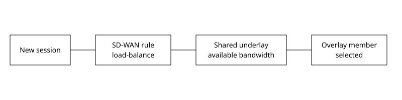
FortiOS 8.0 adds an important distinction for bandwidth-based SD-WAN load balancing: available bandwidth can be evaluated per overlay or against a shared underlay. This matters when several overlay tunnels ride the same physical circuit. Treating each tunnel as independent capacity can overestimate what the site really has; underlay-aware steering lets the service choose based on the shared transport constraint.
config system sdwan config service edit 10 set load-balance enable set hash-mode bibandwidth set bandwidth-type underlay next end end
Bandwidth hash modes include inbound, outbound, and bidirectional available-bandwidth choices. The decision occurs after traffic matches the SD-WAN service and eligible priority members are determined. It is therefore different from Performance SLA health: a member can be healthy yet receive less new traffic because its shared underlay has less available capacity.
The Community scenario adds a release-dependent scale boundary: older releases limited load-balance distribution to eight active members even if more were configured; later FortiOS trains expanded that to sixteen. When traffic seems to ignore members, verify software version and supported member count before assuming a hash defect. Evidence should correlate service configuration, eligible members, bandwidth counters, and actual new-session distribution.
50-question graded exam
Choose one answer, then select Check answer. Feedback explains why every choice is right or wrong.